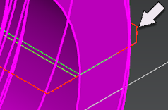

Allow selection of 2D IPW’s
-
In the Program Order view of the Operation Navigator, select the FACING operation.
-
On the Workpiece toolbar, click Select 2D IPW’s
 .
.
-
Observe the display of the IPW.
Before
After

You can select the 2D IPW geometry to measure distance, length, and so on. To ensure that the 2D IPW geometry is not accidentally selected when you select part geometry, turn the option off
-
Continue to select each operation and observe the display of the 2D IPW.
-
Select the ROUGH_BORE_ID operation.
-
Use the Measure Distance command and measure the remaining stock on the inside bore diameter.
-
Close the part without saving it.